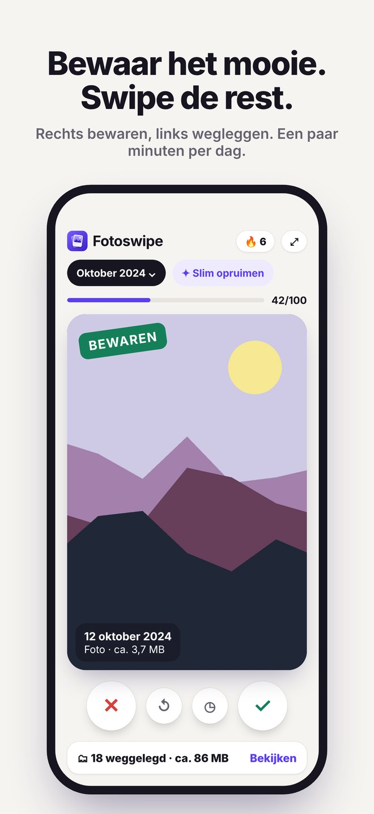
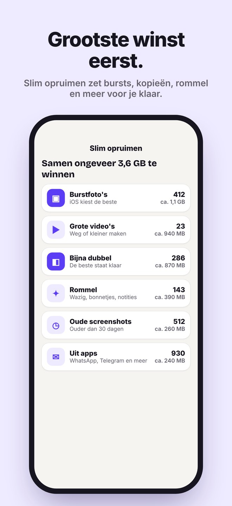

Voor iPhone en iPad
Bewaar het mooie.
Bewaar het mooie.
Swipe de rest.
Ruim je fotorol op in een paar minuten per dag. Rechts is bewaren, links is wegleggen. Pas als jij het controleert en bevestigt, wordt er iets verwijderd.


Slim opruimenBijna dubbele foto's, burstfoto's, kopieën, grote video's en rommel, met de grootste winst bovenaan.
ReiskaartJe foto's per plek en reis op een kaart. Ruim één reis tegelijk op.
Snelle albumsTot drie albums onder de foto. Eén tik en hij staat erin.
Kleiner zonder verwijderenVerklein grote video's of bewaar een Live Photo als gewone foto.
Widget en reeksOp deze dag en je reeks op je beginscherm, en een herinnering op jouw moment.
PrivéGeen account, geen reclame, geen abonnement. Alles gebeurt op je toestel; er wordt niets geüpload.